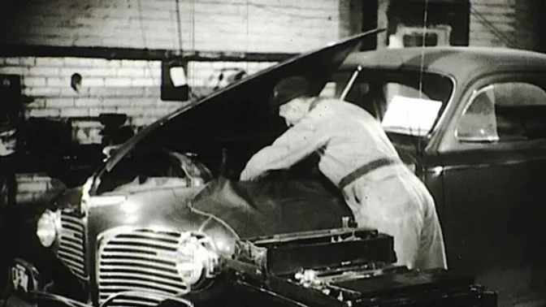
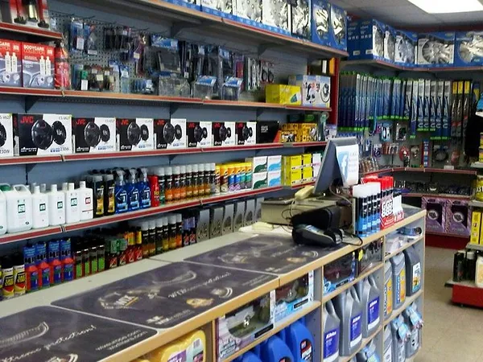

Spanner & Ratchet Motorfactors ©
Knockainey
Hospital
Co. Limerick
086 1212121
CONTACT US AT:
Spanner&Ratchet Motorfactors
Opening Hours:
- Monday: 9.00am to 6pm
- Tuesday: 9.00am to 6pm
- Wednesday: 9.00am to 6pm
- Thursday: 9.00am to 9pm
- Friday: 9.00am to 9pm
- Saturday: 9.00am to 2pm
- Sunday: Closed
About Us
About Us
Mick the Mechanics Story
Mick Ryan started this business in 1983 at the age of 17, he had started an apprenticeship with a local man and was thumbing around 14 miles to work daily. He eventually bought the shell of a 1967 Ford Anglia with no engine, gear box or axel, and a crashed Ford Cortina. He then transferred all the good parts from the Cortina to the Anglia in the evenings after work.
He got the car running again and his Grandfather gifted him a rundown workshop. He then started to turn this place into an area for doing services and repairs in his spare time. He eventually finished his apprenticeship and had enough hard work done to open his garage and start his business.. Mick started up his long-term business of 40 years “Mick’s Motors”

The Future of Mick's Motors
.Although Mick's Motors has now be been taken over by his son James, Mick himself has retired, the same quality service and products will be provided here under the new name of "Spanner & Ratchet Motorfactors"
This local business has been updated and upgraded with an online presence allowing you the customer to get in touch with Spanner & Ratchet Motorfactors any time for all your vehicles needs!

Quality Car Parts, Quality Car Services
Find Us Here:
Brands
- AutoZone
- Bosch
- Autoglym
- Castrol
- Borbet
- ConiTech
- Mobil 1
- Somora
- Boria
- Bose
Customer Loyalty Cards Available